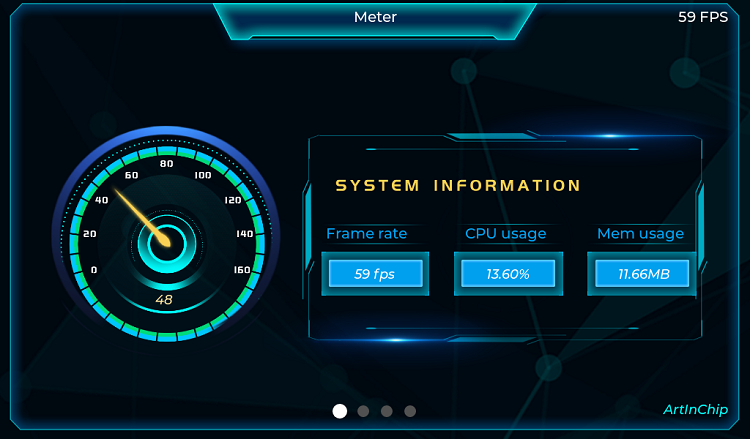
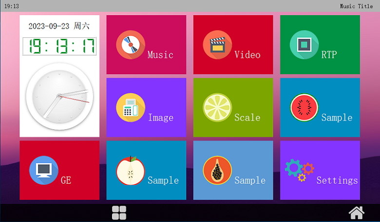

11.7. 示例程序¶
11.7.1. LVGL¶
11.7.1.1. 编译¶
如果要运行 LVGL demo， 需要在 luban 系统通过 “make m” 命令打开 luban 配置界面：
ArtInChip packages
Sample code
[*] test-lvgl --->
需要的三方库会自动加载和编译
11.7.1.2. 运行¶
自动运行：脚本为 /etc/init.d/S00lvgl
手工运行：/usr/local/bin/test_lvgl
11.7.1.3. 界面¶

11.7.1.4. 注意问题¶
test-lvgl 默认的 UI 界面为 1024x600，不会自适应屏幕大小
test-lvgl 默认需要双buffer，因此在board.dts 中要按 高度 x 2 配置
&fb0 {
height-virtual = <1200>; //600 x 2
port {
fb0_out: endpoint {
remote-endpoint = <&de0_in>;
};
};
};
11.7.2. QT¶
11.7.2.1. 编译¶
如果要运行 QT demo， 需要在 luban 系统通过 “make m” 命令打开 luban 配置界面：
ArtInChip packages
Launchers
[*] qtlauncher --->
[*] use GE to render image (NEW)
[*] small memory device (NEW)
需要的三方库如 QT 会自动加载和编译
11.7.2.2. 运行¶
自动运行：脚本为 /etc/init.d/S99qtlauncher
手工运行：
export LD_LIBRARY_PATH=/usr/local/lib:$LD_LIBRARY_PATH
export TSLIB_FBDEVICE=/dev/fb0
export POINTERCAL_CALIBFILE=/etc/pointercal
export TSLIB_CONSOLEDEVICE=none
export TSLIB_TSDEVICE=/dev/input/event0
export TSLIB_PLUGINDIR=/usr/lib/ts
export QWS_MOUSE_PROTO=tslib:/dev/input/event0
/usr/local/launcher/qtlauncher -qws
11.7.2.3. 界面¶

11.7.3. Samples¶
为了方便使用，Luban 开发了一些模块的使用示例，可以通过 “make m” 命令打开 luban 配置界面进行设置：
ArtInChip packages
Sample code
[*] test-adc
[*] test-mtop
[*] test-ce
[*] test-dma-buf
[ ] test-dvp
[*] test-fb
[*] test-lvgl
[*] test-touchscreen
[*] test-uart
[*] test-watchdog
[ ] test-libmad
[*] test-clock
[*] test-keyadc
[*] reg-dump
[*] test-gpio
[*] test-can
[*] test-eth
[*] test-audio